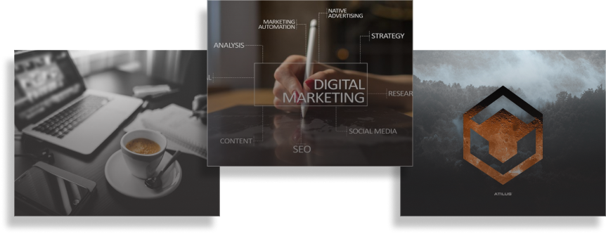

Swoja przygodę z Front-End rozpocząłem w tym roku od kursu Programista - Front-End Developer. Obecnie szukam stażu, który pozwoliłby mi poznać jeszcze lepiej programowanie oraz tworzenie elegenckich, kreatywnych i responsywnych stron internetowych. Chciałbym móc z łatwością przelewać swoje pomysły na zrozumiały i czysty kod. Z wykształcenia jestem matematykiem, ze specjalizacją finansową. Od czasu ukończenia studiów pracowałem w banku jako doradca klienta, w urzędzie jako doradca ds. ulg i umorzeń oraz udzielałem korepetycji z matematyki. Mam więc doświadczenie w pracy w zespole, w pracy z klientem, ale także zorientowanie na wyniki, rzeteleność i samodzielność. W przyszłości na stanowisku Front-End Developera chciałbym wykorzystać swój analityczny umysł wraz z kreatywnym myśleniem do tworzenia oryginalnych stron internetowych. W wolnym czasie lubię czytać książki, od roku tylko w w języku angielskim by móc podszkolić swoją znajomość tego języka. Ponadto spędzam czas na działce, na basenie lub wieczornych spacerach. W domu lubię gotować, zwłaszcza gdy wiąże się to z odkrywaniem nowych smaków z różnych regionów świata.